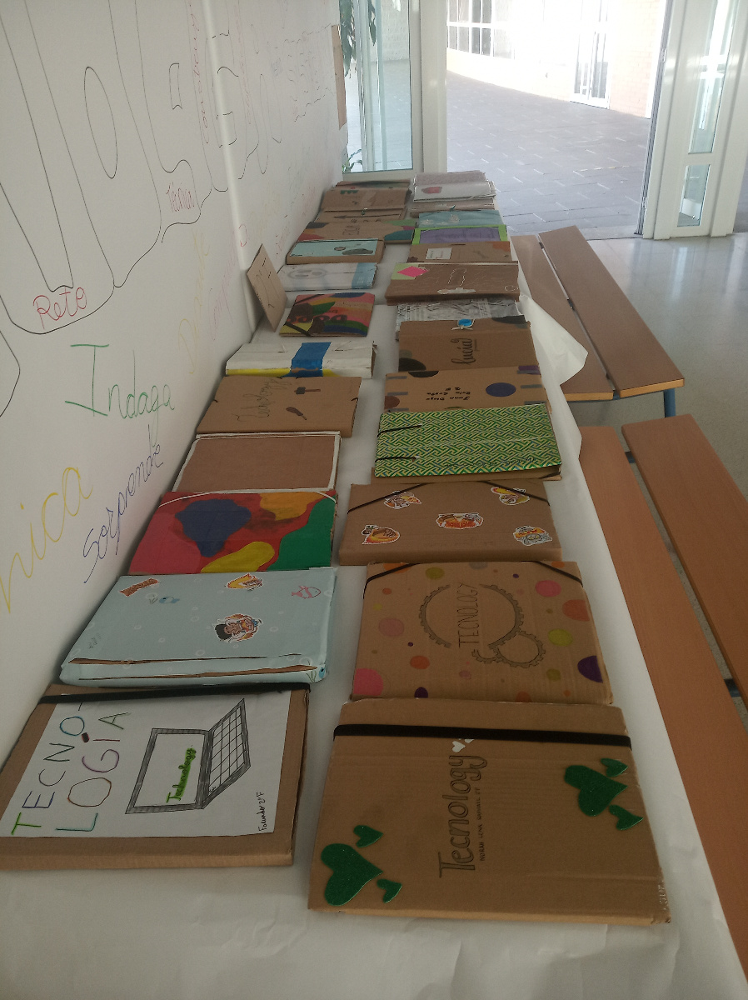

¿Cómo nos organizamos?
El producto final es diseñar y construir una carpeta sostenible intentando que su producción sea a coste cero, no solo por vuestro bolsillo sino por el firme compromiso de contribuir a la sostenibilidad del planeta.
Todo el proceso se desarrollará utilizando el método proyecto haciendo especial énfasis en los tres grandes bloques del proceso de resolución de problemas tecnológicos basados en analizar, construir y evaluar.
Por último, destacar que la difusión o comunicación del producto final es clave en el proceso final, por ello, el departamento de tecnología realizará una exposición de los productos finales en el vestíbulo del centro y se le dará de forma opcional difusión en los RRSS del centro.

En esta situación de aprendizaje vamos a realizar tareas de carácter individual y en grupo, para las tareas colaborativas, vamos a utilizar tres herramientas principalmente.
- Tablero virtual o padlet
-
Padlet es una pizarra colaborativa online que permite guardar y compartir diferentes contenido multimedia como imágenes, videos, audio, presentaciones y archivos desde nuestro equipo o insertando una URL. Tiene muchísimas opciones de personalización. En vuestro caso será una herramienta fundamental en la tarea 1 de investigación y cada uno irá recopilando de forma ordenada el material que ha consultado de interés para diseñar y crear la carpeta.
- Diario de aprendizaje
-
En este documento no solo recopiláis información del trabajo realizado, sino que os permite tener el trabajo organizado y estructurado de todas las tareas y reflejar cómo habéis trabajado, qué pensáis , cómo os habéis sentido durante el proceso de enseñanza/aprendizaje, qué os ha llamado la atención, donde habéis tenido más dificultades,etc.
- Memoria técnica
-
Es el conjunto de documentos que describen completamente el objeto o solución técnica, de forma que una persona con la formación suficiente pueda desarrollarla sin problemas.